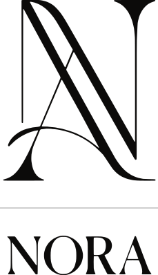
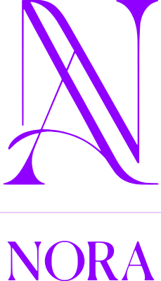
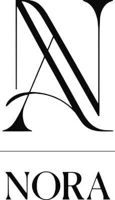
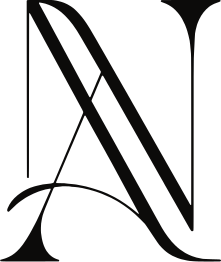
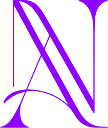
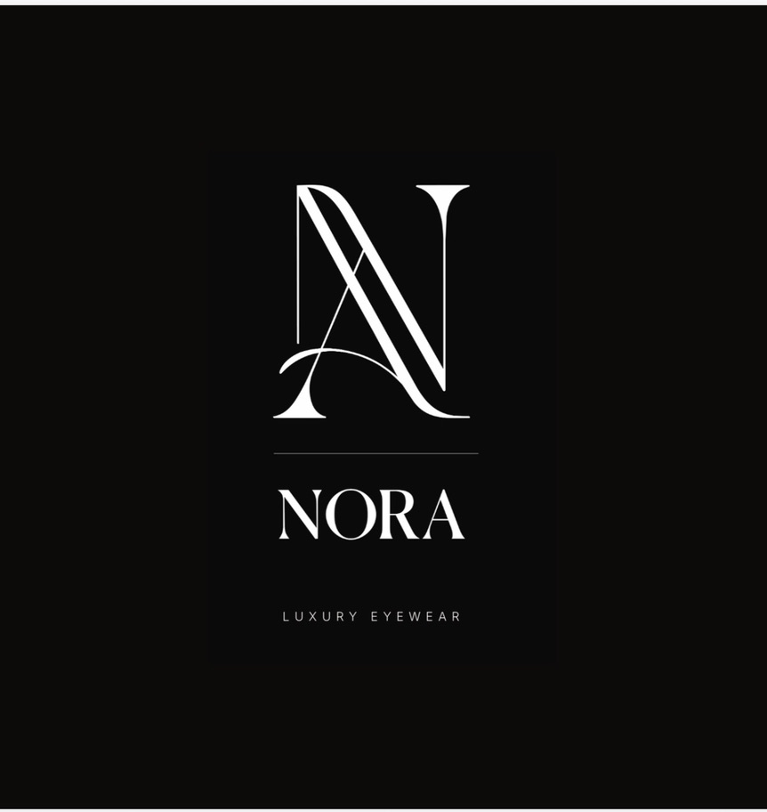
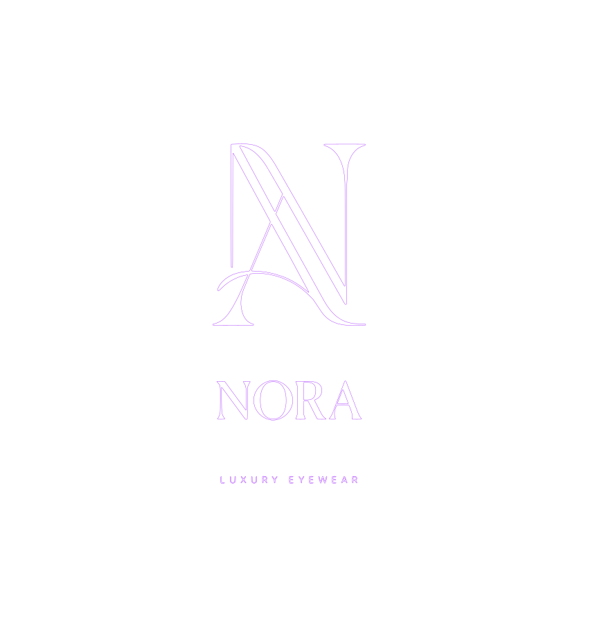
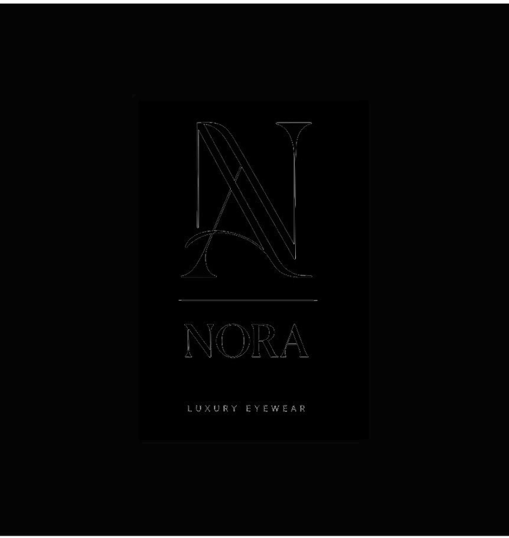

Logo system
NORA · D2 Logo systemPhase 1 draft · Checkpoint 1

Source: refs/logo/nora-logo-black.jpg. One cleanup: the rule sat 5px right of the shared center line and has been centered. Replace this trace with a designer's master file if one exists.
The original. Kept untouched. Uses a banned word, so not recommended.
Matches the amber photo version. The quietest. The primary lockup.
Cut from the original letters, re-centered. Nothing retyped.

DA fact, not a claim. New letters, set in Jost with the original spacing. For packaging, the card and stationery.
Site header, email signature, legal lines, the box spine.
Instagram avatar, favicon, case deboss, box lid, card front.
The authentication mark. Inside the temple only. Engraving sizes in D3, pending Sabaeframe.

Black on white
Violet on black · limited
Single color · deboss preview

Violet: the one accent per layout. Never for small sizes on black. Single color: one flat ink, rule at full strength. For deboss, engraving and foil.
Lockup and wordmark: 1X on every side. Monogram alone: one quarter of its own height. Nothing enters this space: no text, no edge, no other mark.
| Application | Screen | Why | |
|---|---|---|---|
| Lockup with descriptor | 30 mm wide | 140 px wide | Descriptor letters fall under 1.3 mm tall |
| Lockup, no descriptor | 20 mm wide | 96 px wide | Rule and A-form hairlines |
| Wordmark | 15 mm wide | 64 px wide | Serif hairlines on R and A |
| Monogram | 8 mm tall | 32 px tall | The thin A-form stroke. 16 px favicon needs a test. |
| Temple stamp | OPEN: confirm with Sabaeframe | Hand engraving sets the limit. See D3. | |
Also never: outline the mark, add a frame or badge, set it in a gradient, or crop it. The logo goes on the inside of the temple. The outside stays clean.


Source at 1.7× with the vector outline in violet

Difference map · bright = mismatch
| Part | Avg. difference | Ink area |
|---|
The monogram and wordmark match the source within about 1% of ink area. The only visible differences are edge softness from the source's JPEG compression. The descriptor reads heavier because the source letters are soft gray and the vector is solid ink. The source is about 220 px wide, so fine detail below one source pixel cannot be verified.
A designer's master file should replace this trace when one exists, especially for the trademark filing.